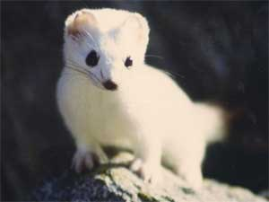
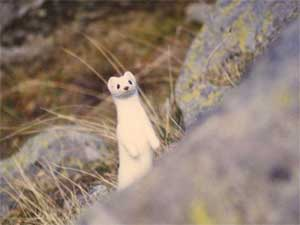

ERMELLINO (ERMINE)

| Climate/Terrain | Boschi e foreste temperate |
| Frequency | Rare |
| Organization | Solitary |
| Activity Cycle | Any |
| Diet | Carnivoro |
| Intelligence | Semi (2) |
| Treasure | Nessuno |
| Alignment | Neutral |
| No. Appearing | 1 |
| Armor Class | 6 |
| Movement | 12 |
| Hit Dice | 1/2 |
| Thac0 | 20 |
| No. of Attacks | 1 Morso |
| Damage / Attacks | 1 |
| Special Attacks | Nessuna |
| Special Defenses | Nessuna |
| Magic Resistance | Nessuna |
| Size | Tiny |
| Morale | Steady (12) |
| XP value | 7 |
Descrizione
Tra i Mustelidi con corpo allungato e zampe corte, l’ermellino ha una dimensione intermedia fra quella della donnola (il più piccolo carnivoro) e quella della puzzola. La lunghezza testa-corpo è di circa 30 cm, la coda è lunga 7-13 cm ed il peso può variare tra gli 85 e i 350 gr nel maschio. La splendida pelliccia ha una colorazione rosso-bruno sul dorso e sui fianchi, bianca o giallastra sul ventre. La punta della coda è nera. In inverno la pelliccia diviene completamente bianca ad eccezione della macchia sulla coda.
Combat
La strategia di caccia dell’ermellino consiste inizialmente nell’ispezionare continuamente l’area, rizzandosi spesso sulle zampe posteriori per avere una visione migliore e, successivamente, nell’avanzare compiendo dei balzi (generalmente lungo muri, siepi o sponde dei fiumi) sorprendendo la preda che ottiene un -3 alla sua iniziativa. L’ermellino possiede olfatto, udito e vista molto sviluppati, ottiene un bonus di +2 ai tentativi di soprenderlo.
Se minacciato, produce (free action) un forte e sgradevole odore di muschio, una volta ogni ora, dalle ghiandole anali. Tutti coloro si trovano in melee con lo stesso devono superare un tiro salvezza contro morte o subire per 2d4 rounds una penalità di -1 ai tiri per colpire.
Costruisce le sue tane sotto terra, in lunghi cunicoli, dove si rifugia immediatamente in caso di pericolo.
Habitat/Society
E’ un animale solitario e territoriale. La dieta dell’ermellino è rappresentata principalmente da arvicole e, qualora esse scarseggino, da uccelli, roditori, lepri, conigli e anfibi.
Ecology
La volpe è molto ricercata per la sua pelliccia. La sua pelliccia può valere da 3 g.p. (fino a 5 g.p. per il manto bianco invernale).
